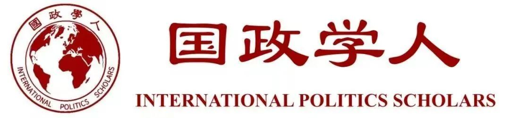
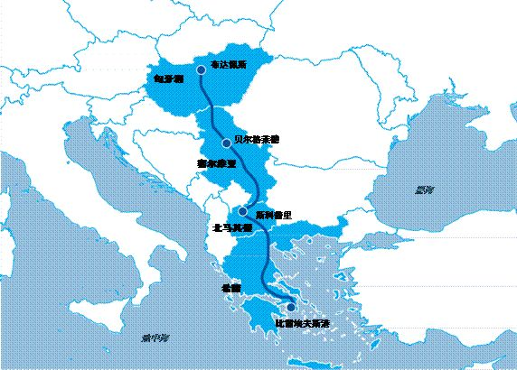

收录于合集

作品简介
【作者】 Wouter Zweers，荷兰国际关系研究所欧盟和全球事务部研究员；Vladimir Shopov，欧洲外交关系协会副研究员、索菲亚大学和保加利亚外交部外交学院政治学副教授；Frans-Paul van der Putten，荷兰国际关系研究所欧盟和全球事务部高级研究员；Mirela Petkova，荷兰国际关系研究所中国研究中心初级研究员；Maarten Lemstra，荷兰国际关系研究所欧盟和全球事务部的研究助理。
【编译】 房宇馨（国政学人编译员，北京外国语大学国际关系学院硕士）
【校对】 刘瑛琛
【审核】 朱晓洁
【排版】 高思慧
【美编 】黄竹音
【来源】 Wouter, Z., Vladimir, Shopov., Frans, P.P., Mirela, P., Maarten, L.(2020). China and the EU in the Western Balkans: A zero-sum game? Retrieved September 6, 2020, from Clingendael Website: https://www.clingendael.org/pub/2020/china-and-the-eu-in-the-western-balkans/.
智库简介
荷兰国际关系研究所于1983年在荷兰海牙成立，是致力于国际事务的顶尖智库和独立研究机构，常为欧洲政府以及欧盟提供相关政策建议，同时也是少数紧密追踪和研究“一带一路”倡议的欧洲独立智库。该所亦为全球最大的国际外交领域培训中心之一。2012年，为进一步明确分工，研究所进行了机构改革，分为研究院和培训学院两大部门，分别负责研究和培训工作。
中欧会在西巴尔干地区
陷入零和博弈吗？
China and the EU in the Western Balkans: A zero-sum game?
Wouter Zweers
Vladimir Shopov
Frans-Paul van der Putten
Mirela Petkova
Maarten Lemstra
文章导读
本报告从政治、经济及安全角度梳理了中国对西巴尔干六个非欧盟国家（或地区）（Western Balkans Six，WB6）的政策，并重点分析了中国与西巴尔干地区的互动是否对欧盟在该地区的改革目标构成了挑战。
关于中国与西巴尔干的互动，学界及政界主要有两方面观点。一方面，主流观点认为，如果西巴尔干各政府认识到加入欧盟前景黯淡，那么便可能会接受中国、俄罗斯或其他有影响力的非欧盟大国对该地区施加更多影响，而这种影响力的增加可能会造成它们做出不符合欧盟利益的政策选择，从而与欧盟的地区改革议程背道而驰。而另一个角度来看，一些研究人员警告称，由于在善治、宏观经济稳定、环境保护、公共采购（透明度）、腐败、人权、隐私和数据保护等方面，中国的规则及标准与欧盟相比有所出入，因此欧盟方面质疑中国投资的基础设施项目可能会使西巴尔干地区的庇护制（patronage）和腐败永久化，并造成更为严重的环境污染。
总体而言，促进西巴尔干的经济发展和基础设施建设是中国、欧盟及区域本身的共同目标，中国和欧盟在西巴尔干地区的接触并不构成零和博弈。但中国在该地区的实际运作方式却一定程度上影响了欧盟和西巴尔干地区通过《稳定与联系协议》（Stabilization and Association Process）和申请入盟进程而形成的高度制度化的关系。欧盟认为，中国与西巴尔干地区联系的加强阻碍了欧盟在政治、经济和安全方面的规范向该地区扩散，并时常导致西巴尔干偏离欧盟的改革计划。同时，中国在西巴尔干地区参与的日益深入，可能会影响欧盟与西巴尔干拉近距离的社会化和条件性机制。对此，报告为欧盟提出了八条政策建议，借以平衡中国参与该地区事务的影响力。
01
**** 中国的西巴尔政策
（一）区域层面
中国并未出台一项涵盖西巴尔干六国（或地区）的共同地区战略。相反，中国将与西巴尔干各政府的双边关系嵌入了中国同中东欧国家共同搭建的“17+1合作”平台。西巴尔干地区的五个国家（波黑、黑山、阿尔巴尼亚、塞尔维亚和北马其顿）是17+1机制的成员国。（“17+1”不包含科索沃地区，因为中国不承认科索沃是一个独立国家，没有与科索沃建立外交关系）但在实际操作层面中，中国并未在“17+1合作”平台中将西巴尔干五国作为非欧盟成员国而进行区分。
实际上，中国在西巴尔干地区的主要利益点不在于六国（或地区）本身，中国看重的是西巴尔干与欧盟在地理位置上的相近。因此， 中国在西巴尔干地区的主要战略目标是建设“一带一路”倡议中的中欧陆海快线（Land-Sea Express Route，LSER），以提升中国与欧盟之间的连通性，巩固中国的主要出口市场。 作为“一带一路”战略构想的重要一环，中欧陆海快线南起希腊比雷埃夫斯港，中途经过北马其顿和塞尔维亚，向北延伸至匈牙利和捷克，是贯通巴尔干半岛的中欧运输走廊。中国与希腊、塞尔维亚和匈牙利之间密切的外交关系为中国政府和企业提供了继续开发中欧陆海快线的动力，中欧陆海快线未来将成为中欧的主要贸易通道之一，比雷埃夫斯港作为中国- 欧盟贸易枢纽的转运能力也将加强。

图1.中欧陆海快线线路图
（二）经济领域
在贸易方面，数据表明，虽然中国与西巴尔干地区的贸易额占该地区总贸易额的比例不到10%，但中国已上升为该地区多数国家的第二或第三大进口国。 尽管欧盟目前仍是西巴尔干最重要的贸易伙伴，但中国的贸易影响力已经超越了俄罗斯、土耳其等西巴尔干的传统贸易伙伴。
在直接投资方面，与贸易情况类似，虽然中国对西巴尔干的直接投资在不断增加，但中国并不是该地区任一国家的第一大外商直接投资来源国。在2013-2018年期间，西巴尔干六国（或地区）的最大外商直接投资来源国始终是欧洲国家。如在2018年，塞尔维亚的第一大投资来源国是法国，而波黑则是奥地利。但目前，由于西方企业在塞尔维亚及波黑等国的能源业务呈现撤出趋势，因此中国被西巴尔干视为一个重要的投资国。另外，如上所述，中国对西巴尔干直接投资的主要形式是收购公司而非创建新公司（即绿地投资比重较低）。
在中国与西巴尔干地区的经济联系中，最受国际关注的是基础设施建设贷款。在西巴尔干地区建设的“一带一路”等项目（如匈塞铁路）多数使用的是由中国进出口银行提供的优惠贷款。另外，当欧盟不愿为西巴尔干各国政府建设国内基础设施（如黑山的南北高速公路）提供资金时，中国进出口银行等中方国有银行可作为欧盟的补充和潜在替代角色为西巴尔干提供融资帮助。值得注意的是，在基建融资方面，中国可以通过减免债务换取政治让步的方式增加对黑山、阿尔巴尼亚等北约成员国的政治影响力，但到目前为止，还没有迹象表明中国政府试图出于政治目的而使用这种手段。
（三）政治领域
上世纪60年代，中国同阿尔巴尼亚的外交关系极为密切。
1999年2月，由于当时的马其顿共和国与台湾建交，所以中国否决了联合国安理会关于同意联合国驻马其顿预防性部署部队延期的决议草案。该国后来宣布承认中华人民共和国政府为中国的唯一合法政府，两国恢复邦交。
南斯拉夫解体后，塞尔维亚成为了中国在该地区的主要外交伙伴。科索沃战争中有3名中国记者在轰炸中失去生命，这使得中塞关系在战火的洗礼下更加紧密，塞尔维亚也是习近平以国家主席身份到访的唯一一个西巴尔干国家。
中塞关系的主要政治支柱是中国的安理会常任理事国地位。 在科索沃问题上，中国政府认为科索沃单方面宣布独立与中国在领土完整问题上的原则相冲突，因此中国始终支持塞尔维亚立场，不承认科索沃是一个独立的主权国家，并使用否决权拒绝科索沃加入联合国。除此以外，塞尔维亚将与中国的互动视作缩小与地区其他国家及欧盟发展差距的必要工具，意图借此加速入盟进程。
虽然包括科索沃在内的西巴尔干各国或地区政府均对“一个中国”原则持支持态度，选择不与台湾保持外交关系或向台湾提供任何形式的政治支持，但在新疆、香港及南海等问题上西巴尔干给予中国的支持相对有限。 如2019年，俄罗斯、巴基斯坦等55国常驻日内瓦大使联名致函联合国人权理事会，支持中国在涉疆问题上的立场，但其中却不含任何一个西巴尔干国家。然而，塞尔维亚在新疆问题上坚定维护中国立场，这可能会为西巴尔干地区通过更多表达支持中国的政治立场以换取经济及外交支持而提供先例。
除此之外，中国也是西巴尔干地区在全球性公共危机中值得信赖的伙伴。在新冠疫情期间中国向塞尔维亚、黑山、波黑等国提供了大量医疗援助。
（四）安全领域
与经济和政治领域相同，塞尔维亚是与中国在安全领域合作最为广泛的西巴尔干国家。两国的安全合作包括联合军演、警务合作、军备采购和通讯业务合作等，塞尔维亚同时也是西巴尔干六国（或地区）中唯一一个从中国购买无人机并与中国通信技术公司华为保持长期合作的国家。除塞尔维亚外，由于阿尔巴尼亚、黑山和北马其顿是北约成员国，而科索沃与中国并没有建立外交关系，因此西巴尔干半岛与中国的安全合作空间有限。
02
**
**
西巴尔干国家（或地区）对中国的态度
从国家层面来看，对西巴尔干六国（或地区）按照中国对其的接触程度和深度进行降序排列可得：塞尔维亚、黑山、波黑、北马其顿、阿尔巴尼亚、科索沃。
从经济层面来看，西巴尔干将中国视为地区经济发展的重要合作伙伴。由于“一带一路”计划对投资受惠国的透明度要比欧盟低，对比较贫穷的西巴尔干地区仍就保持着吸引力，但不断严苛的审查可能减弱这一偏好； 为同欧盟的经济水平相接轨，各国即使意识到了向中国大规模借贷的风险，但仍希望在未来与中国加强合作。 在西巴尔干六国（或地区）中，塞尔维亚尤其希望与中国加强政治和经济联系，以对欧盟及其他大国形成制衡。
但西巴尔干对中国的经济投入也存在部分消极评价。由于多数基建项目尚未完工，中国对旅游业、贸易或制造业投资等后续项目的投入不足，因此从西巴尔干六国（或地区）的角度来看， 中国对西巴尔干的经济参与没有完全发挥潜力，它们很大程度上仍只将当下的中国理解为一个基础设施融资大国，而非一个经济大国。 同时，低水平的绿地投资尚不足以满足西巴尔干对中国的期待，西巴尔干对中国未能更广泛地参与地区经济发展略感失望。
从政治层面来看，在处理与东南欧国家的关系时，中国的官方话语更多强调的是平等互利的经济互动，而不使外界过度关注双方在价值观和政治上的联系。然而，尽管中国在西巴尔干地区扮演的更多是一种经济大国的角色，但政治因素也在双边关系中发挥了重要作用。 西巴尔干六国（或地区）将中国视为可以实现地缘政治目标的有力助益。
03
中国与西巴尔干的合作是否对欧盟构成了挑战?
（一）欧盟对西巴尔干的外交政策目标
欧盟与西巴尔干地区接触的最终目标是使其成为欧盟的正式成员国，欧盟正在通过不同手段试图拉近该地区的距离。
欧盟早在2003年的塞萨洛尼基峰会（Thessaloniki Summit）上便承诺将最终吸纳西巴尔干六国（或地区）入盟，以促进地区的和平、稳定、民主和法治，同时在该地区推动符合欧盟规范、价值观和立法的改革。1993年，欧盟在哥本哈根首脑会议中为申请入盟国在政治、经济、行政和体制方面制定了严格的成员国标准。此外，欧盟还特别为西巴尔干地区制定了一项关于区域合作和睦邻关系的“哥本哈根+”标准。
通过法律条约、领导人定期峰会以及欧盟委员会（特别是欧洲睦邻政策和扩大谈判委员）、欧盟外交与安全政策高级代表等对该地区的持续接触， 欧盟与西巴尔干六国（或地区）之间在固定的程序、指导文件及标准的基础之上，实现了一种由官僚协调且高度密切的制度化关系。
（二）欧盟向西巴尔干输出标准和价值观会否受到中国影响
由于接受中国标准、规则和价值观所付出的成本要更低，因此欧盟试图使西巴尔干六国（或地区）完全遵守欧盟标准、规则和价值观的目标将变得更加困难。
政治标准：
1. 欧盟关于善治/腐败的标准 ：从欧盟的观点来看，对于转型期的经济体而言，外部融资的附加条件对推动治理改革至关重要。面对中国的投资，西巴尔干的政治精英们不必实行透明的招标程序、问责制和其他善治改革要素，这对于塞尔维亚等新兴民主国家而言可能会加剧腐败和专制行为。
2. 欧盟关于基本人权和言论自由的标准 ：人权、言论自由和多元化是民主运作的核心原则，也是欧盟核心价值观的重要组成部分。而在这一方面，中国的标准与欧盟有所差异。
经济标准：
1. 欧盟关于公共采购和基础设施发展的标准 ：如果未来将西巴尔干纳入欧盟单一市场，那么它们进行公共采购需要在非歧视性和平等对待原则的基础上对所有公司开放公开透明的市场竞争。而中国通常通过政府间协议，要求西巴尔干六国（或地区）在接受基础设施贷款时选择中国承包商来执行大部分基建项目，这实际上并不符合公共采购的程序，可能会降低资金透明度，并可能导致腐败，阻碍西巴尔干经济体朝着运行良好的市场经济体方向发展。
2. 欧盟关于宏观经济稳定的标准 ：欧盟要求成员国的预算赤字不得超过国内生产总值的3%，公共债务不得超过国内生产总值的60%。以黑山为例，由于南北高速公路等基建项目，中国占黑山外债总额的20%（占其国内生产总值的11%）。一方面，高额外债可能导致债务危机，导致负债国被迫削减国内支出和提高新国债利率。而从中长期来看，也可能对政治稳定造成负面影响。另一方面，高额外债可能会带来依赖风险。
3. 欧盟关于环境和能源的标准 ：西巴尔干仍然是欧洲污染最严重的地区之一，原因这一是该地区仍然较为依赖低水平的柴煤发电。环境可持续性是欧洲投资银行决定是否进行项目投资的标准之一，因此欧盟并没有投资西巴尔干地区污染严重的煤电厂。而中国投资该地区的煤电厂为西巴尔干地区提供了一个替代欧盟的选择，但却在客观上对环境造成了相当大的破坏。
安全标准：
1. 关于隐私和数据保护 ：中国制定的数据保护和隐私保护标准与欧盟有所不同。近期，塞尔维亚与华为的“安全城市”项目（大规模视频监控）便遭到了控制公民自由（包括隐私权）的质疑，也与欧盟《通用数据保护条例（GDPR）》无法兼容。
2. 关于区域合作与睦邻关系 ：解决西巴尔干国家之间的双边冲突以加强地区稳定是欧盟扩容的主要目标之一。西巴尔干国家在加入欧盟之前必须满足欧盟为其制定的“哥本哈根+”标准中规定的关于和解和区域合作方面的条件。在科索沃问题上，中国支持塞尔维亚不承认科索沃的主权国家地位，继续投票反对科索沃加入联合国等国际组织。中国的这一立场一定程度上阻碍了塞尔维亚和科索沃的入盟进程。
（三）中国对欧盟社会化及条件性机制的影响
1. 社会化
社会化即欧盟候选国会根据欧盟标准和价值观改变自身的身份认同和偏好，这反映了一种长期的心态转变。 要实现这种社会化，需要候选国信服欧盟规则的合法性并认同欧盟，并使欧盟的标准、价值观和规则在国内也形成一定程度的共鸣。对于欧盟而言，在候选国中实现社会化是被动的，但欧盟也可以通过软实力战略积极推动社会化进程，例如资助西巴尔干地区的民间社会和组织学生交换。
在社会化方面，鉴于中国与西巴尔干的关系主要集中在经济交往上，该地区与中国之间的社会化程度将在很大程度上取决于中国经济机遇的吸引力。如果中国能够克服“一带一路”中出现的问题，那么西巴尔干六国（或地区）可能会越来越多地学习中国政治模式中的某些规范，进而导致两者之间“被动”社会化的加强。从孔子学院到“友好协会”，中国也在主动寻求与西巴尔干地区进行文化接触，促进与“一带一路”沿线国家的人文联系，这可能使中国的软实力在西巴尔干社会中更具共鸣性。这些将对欧盟拉近与西巴尔干地区的距离产生实际影响。
2. 条件性机制
加入欧盟的条件性机制被欧盟视为对西巴尔干施加影响、要求其进行全方位改革的最有力机制。 然而，由于中国对西巴尔干地区的接触不断扩大，入盟条件性机制受到了两方面影响：第一方面影响关于交叉条件性（即以较低的调整成本提供可比利益的其他来源）。相比于中国标准，采用严格而庞杂的欧盟规则意味着西巴尔干六国（或地区）将面对巨大的调整成本，那么此时欧盟条件性的效力会因此而降低。而在第二方面，对于西巴尔干地区而言，采用欧盟的现行规则意味着拒绝来自中国等其他外部行为体可能带来的替代利益，这反之又增加了机会成本。基于此，以塞尔维亚为代表的西巴尔干六国（或地区）会在中国及欧盟之间进行战略平衡以从中获取最大收益。欧盟扩容谈判基于的是非对称性相互依赖，候选国可从欧盟获得更多利益，这便使欧盟在谈判中具有更强的优势。从这意义上讲，候选国增加与第三国的接触可以在入欧谈判中为自身增加更多砝码。因此，中国对西巴尔干地区接触的不断扩大，挑战了加入欧盟条件性机制的有效性。
（四）欧盟与西巴尔干搭建联系会否受到中国阻碍
中国对西巴尔干的接触并没有直接威胁其入盟愿望。 一方面，塞尔维亚等国家最大限度地利用与中国的接触提升自身实力以加速入盟进程。另一方面，与中国接触意味着欧盟不再是西巴尔干的“唯一选择”，中国同样可以帮助它们实现经济发展和促进就业的目标，同时提高其对欧盟的谈判能力。
如上文所述，欧盟在贸易和投资方面仍然是西巴尔干地区最大的经济伙伴，欧盟还通过签证自由化和优惠性市场进入等方式向西巴尔干提供“胡萝卜”激励政策。 中国在西巴尔干地区的经济交往和互联互通目标相当有限，并不能与欧盟制定的西巴尔干政策目标的广度、深度和水平相提并论。 由于西巴尔干在地理上接近欧盟单一市场，且与欧盟单一市场的联系日益密切，中国的贸易或直接投资在短期内不太可能超过欧盟的整体经济参与。
在总体目标层面，促进西巴尔干的经济发展和基础设施建设是中欧及该区域本身的共同目标。因此在这一点上，中欧并不构成冲突。中国通过基础设施建设促进与西巴尔干的互联互通，而欧盟本身就有一项促进自身与第三方国家经济融合的互联互通战略，通过入盟准备基金（the Pre-accession Funds）和欧洲投资银行为基施提供资金，受惠对象中便包括了西巴尔干地区。同时，中国对需要大量外部融资的西巴尔干进行投资将有助于其在经济上与欧盟接轨。从这一意义上来看，欧盟可能会从中国的投资中获益。
应当承认，中国在西巴尔干的经济参与并不能与中国的地缘政治考量分开看待。 中国对政治和经济价值观的态度与欧盟不同，以至于中国和欧盟在同时与西巴尔干进行互动时不可避免地会导致该地区政府的选择冲突。
04
结论及建议
迄今为止，欧盟并未表露出与想要与中国经济脱钩的意愿。因此，无论是在西巴尔干地区还是在欧盟内部，中国仍将是一个重要的经济参与者，欧盟需要继续与中国打交道。对此，本报告为欧盟提出了如下的政策建议：
第一， 欧盟应针对西巴尔干地区出台一套取代中国方案的经济战略。
第二， 欧盟应利用更有效的扩大进程，减轻中国对西巴尔干地区接触的增加而可能带来的负面影响。
第三， 欧盟可通过内部机构与西巴尔干地区建立政治和经济联系，确保西巴尔干与中国进行经济接触时，能够采用欧盟的标准、规则和价值观（特别是在善治和公共采购方面）。
第四， 欧盟应在基建融资方面给予西巴尔干地区更多资金支持。
第五， 欧盟应加强与西巴尔干各政府高层的反腐败问题对话，并在相关书面文件中对腐败行为予以强烈谴责。
第六， 欧盟应与西巴尔干各政府加强沟通，向其传达推行欧盟标准所带来的益处，尤其是在环境保护及数据隐私保护领域。
第七， 面对西巴尔干半岛的非欧盟国家正在申请加入欧盟这一事实，欧盟应适度提高它们加入欧盟的门槛，借此平衡中国参与该地区事务的影响力。
第八, 欧盟委员会应对西巴尔干国家不符合公共采购程序的政府交易进行跟踪调查，并在对其进行政治谴责之后采取相应措施。
译者评述
“西巴尔干”（Western Balkans）是由欧盟于1999年首次提出的政治概念[1]，主要包括巴尔干半岛西部的塞尔维亚、波黑、黑山、北马其顿、阿尔巴尼亚五国和联合国托管下的科索沃地区。[2] 在原东欧社会主义国家纷纷加入欧盟之后，西巴尔干各国目前都在积极寻求入盟。但由于入盟前景黯淡，西巴尔干各国近年来逐渐将战略重心转向中国等其他大国。作为西巴尔干地区最大的利益相关者，欧盟的西巴尔干战略是通过推广欧盟制度、价值和规范以及投放专项发展援助资金，潜在推进西巴尔干在政治、经济和法治等方面的民主转型，促进地区民族和解与睦邻友好，最终实现欧洲一体化的目标。[3] 但伴随着“17+1”合作框架以及“一带一路”倡议在该地区相继落地，中国与西巴尔干的双边互动持续加强。欧盟担忧中国的强势介入将削弱西巴尔干国家入盟的意愿和动力，未来双方在这一区域是否会构成零和博弈将成为影响中欧关系走向的重要议题，这也是这篇报告所主要探讨的。
作为一篇由欧洲智库发布的政策建议报告，本文的观点带有明显的立场倾向性。
首先，报告未完全了解中国在西巴尔干的投资动机。欧盟担心中国试图利用经济手段达到分化欧盟的政治目的。但实际上，中国始终将与西巴尔干的合作归于“中欧关系”大框架之下，深化与西巴尔干的合作首先是因中国看重该地靠近欧盟的区位优势。中国在欧盟的外围进行投资，最终目的是为进入欧盟大市场提供便利渠道。[4] 中国不会借投资输出中国模式，也并非意图取代欧洲，不应过分夸大中国在巴尔干地区的经济影响力。中国更为需要的是一个联合和稳定的欧盟，同时坚定支持西巴尔干国家融入欧盟体系。中国在西巴尔干地区的投资促进了区域的经济增长和地区互联互通，实际在客观上促进了欧盟的一体化进程。
其次，报告虽在结论中提出中国和欧盟在西巴尔干地区并不是零和博弈的对手，但实际上还是用大篇幅突出强调了中国与西巴尔干国家的互动对欧盟造成的负面冲击，这种观点显然是在带着意识形态的有色眼镜剖析中国，是有失偏颇的。报告主要基于的是桌面研究（Desk Research）和对西巴尔干地区专家和决策者的访谈，缺乏对中国投资西巴尔干项目的全面、深入和系统调研。比如，文中提到的中国投资为地区国家造成了过重的债务负担、加重腐败等问题，虽反映了一定的实际情况，但却是中国推进“一带一路”倡议前期由于经验不足而必然会出现的情况，中国只要充分总结经验便可以逐步妥善解决。并且，中方在目前已开始转换投资方式，逐渐从优惠贷款转变为直接投资，正在逐步实现海外运营融资模式的转型。[5]
最后，历数报告为欧盟提出的八条政策建议，作者基本是在把中国视为可能对欧盟造成潜在威胁的竞争者的认知上，要求欧盟进一步与中国在西巴尔干地区展开战略博弈。报告并不认为欧盟与中国在西巴尔干地区应开展公平的经济竞争，也未提出中欧之间加强交流对话、深化互信合作，而是建议欧盟加紧出台应对措施，利用扩大进程、基建投资、高层对话等手段巩固在西巴尔干地区的政治和经济存在，减轻中国对该地区的接触所带来的负面影响，实际上是意图将中国排挤出西巴尔干。这显然是一种战略上的短视和片面，只会加剧欧盟对中国的负面认知及双方间的互不信任，不利于各利益相关方在西巴尔地区的良性竞争与合作。
可以预见的是，欧盟对中国参与西巴尔干事务的疑虑将在未来很长一段时期都将持续存在。从中方视角来看，中国应与欧洲在地区互动中营造“合作”而非“竞争”的良好氛围，更应通过“一带一路”倡议下的具体项目合作来增进中欧双方之间的了解，实现增信释疑。
参考文献
[1] “西巴尔干”概念的使用目前仍然存在争议，因部分学者认为，“西巴尔干”体现出欧盟“运用其在欧洲大陆的话语权，将这一区域塑造成一个不同于欧盟的它者”，以致“西巴尔干”更多使用于政治及文化语境而不是一个中立的地理概念。参见田旭：《聚焦西巴尔干：“一带一路”倡议如何对接欧盟扩大战略》，《国际经济评论》2018年第5期。
[2]本文译自欧洲智库，原文中的“西巴尔干六国（Western Balkans Six，WB6）”属欧洲语境下的政治概念。克罗地亚于2013年加入欧盟，因此当前欧盟文件中的“西巴尔干六国”主要指代的是塞尔维亚、波黑、北马其顿、黑山、阿尔巴尼亚和科索沃等6个行为体。由于中国不承认科索沃的独立主权国家地位，因此“西巴尔干六国”的表述方式并不适用于中国的政治立场，文中遂将WB6译为西巴尔干六国（或地区）。
[3]田旭：《聚焦西巴尔干：“一带一路”倡议如何对接欧盟扩大战略》，《国际经济评论》2018年第5期，第80-82页。
[4]刘作奎：《“一带一路”倡议下中国对巴尔干地区的投资现状及影响——基于实地调研案例分析》，《欧亚经济》2019年第3期，第52页。
[5]同上。
文章观点不代表本平台观点，本平台评译分享的文章均出于专业学习之用, 不以任何盈利为目的，内容主要呈现对原文的介绍，原文内容请通过各高校购买的数据库自行下载
**
**
**
**
**
**
添加 “国小政”微信
获取最新资讯


国政学人
支持学术公益与知识传播
微信扫一扫赞赏作者 __赞赏
已喜欢，对作者说句悄悄话
取消 __
发送给作者
发送
最多40字，当前共字
上一页 1/3 下一页
长按二维码向我转账
支持学术公益与知识传播
受苹果公司新规定影响，微信 iOS 版的赞赏功能被关闭，可通过二维码转账支持公众号。